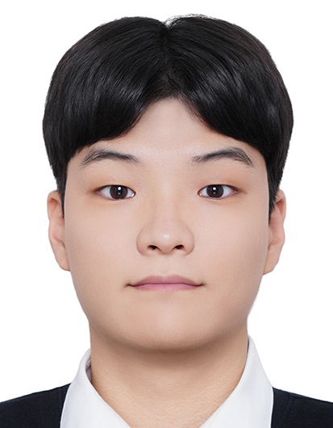

Undergraduate Research Assistant
Machine Intelligence Laboratory, Kookmin University
Advisor: Prof. Jaekoo Lee
Undergraduate Researcher · Kookmin University
ddugel3 [at] kookmin [dot] ac [dot] kr

I am an undergraduate student in the School of Software at Kookmin University, expecting to receive my B.S. in August 2026. I worked as an undergraduate research assistant at the Machine Intelligence Laboratory under the supervision of Prof. Jaekoo Lee.
My research focuses on terrain-aware cross-embodiment locomotion. I am interested in shared low-level control policies that generalize across diverse robot morphologies and unseen terrains by jointly conditioning on morphology and perceptive terrain information.
Previously, I studied on-device LLM optimization and model compression through quantization and knowledge distillation in Kookmin University's Undergraduate Research Opportunities Program.
| Jun. 2026 | Our paper on terrain and morphology fusion for shared quadruped locomotion policies was published at IEIE 2026. |
|---|---|
| Jun. 2026 | Our work STAR appeared at the AUTOPILOT Workshop at CVPR 2026. |
| 2026 | Ranked 6th out of 106 teams on both the public and private leaderboards in the ACCIDENT @ CVPR 2026 Challenge. |
| Feb. 2026 | Ranked 18th out of 782 teams on the private leaderboard in the DACON × BDA competition. |
| Dec. 2025 | Achieved OPIc Advanced Low (AL). |
Conditional Fusion of Terrain and Morphology for Shared Quadruped Locomotion Policies
Geonung Choi, Taejin Park, Jaekwon Lee, and Jaekoo Lee*.
Institute of Electronics and Information Engineers (IEIE), June 2026.
STAR: Stage-wise Traffic Accident Detection via Optical-Flow-Guided Reasoning
Jaesung Sung, Jiwon Kim, Rian Ryu, Minseok Lim, Geonung Choi, Minju Jeong, and Jaekoo Lee*.
AUTOPILOT Workshop (non-archival), IEEE/CVF CVPR, June 2026.
* Corresponding author
Undergraduate Research Assistant
Machine Intelligence Laboratory, Kookmin University
Advisor: Prof. Jaekoo Lee
Undergraduate Researcher
Undergraduate Research Opportunities Program, Kookmin University
Advisor: Prof. Changwoo Lee
Kookmin University
B.S. in Software, School of Software, College of Computer Science. Expected August 2026.
Honorable Mention
2025 KMU CS Interdisciplinary Capstone Design.
2nd Place, ESW Open Track
The 21st World Embedded Software Contest.
Commendation Award, Intelligent Humanoid Track
The 21st World Embedded Software Contest.
Academic Excellence Scholarship
National Program of Excellence in Software.
Academic Excellence Scholarship
University Innovation Support Program.
Special-Talent Scholarship
National Program of Excellence in Software.
1:1 Coding Tutor, Coderland
C++, Python, Scratch, and Entry.
Coding Instructor, Unicoding Study
C/C++, Python, Scratch, Entry, and algorithms.
AI/SW Educational Volunteer
Led and mentored five sessions at Yongmun H.S. and Hongik-Affiliated H.S., covering programming, GitHub, Raspbian, AI fundamentals, and MLP implementation.
President, Kookmin University Open-Source Software Club (KOSS)
Deputy Director, PR Department, 8th Student Council (Connect)
Email is the best way to reach me.